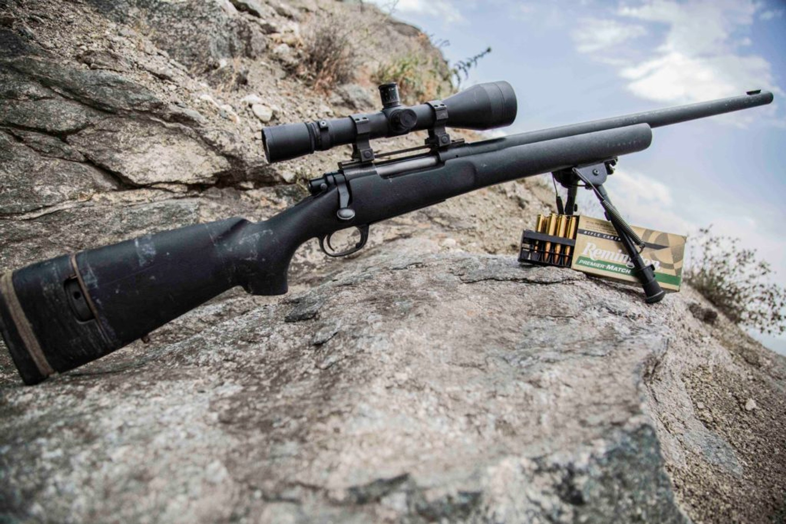
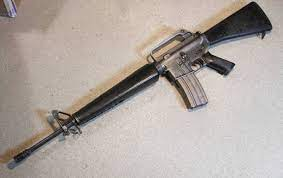
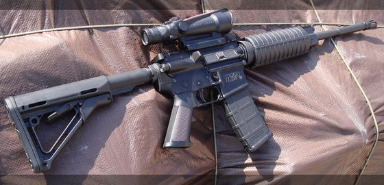
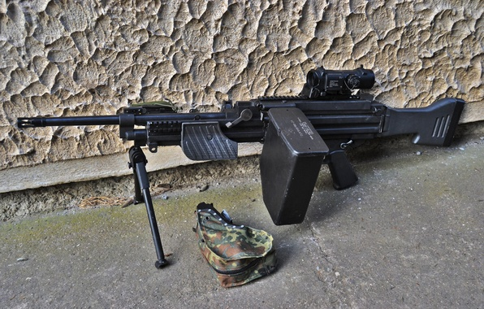

Наш асортимент
-

Снайперська гвинтівка M24
Снайперська гвинтівка M24 — американська снайперська гвинтівка, розроблена на базі Remington 700.
Купити -

M16
M16— узагальнювальна назва сімейства автоматичних гвинтівок, які походять від ArmaLite AR-15 та розроблені компанією Colt в середині XX століття.
Купити -

Glock 18
Glock 18 — австрійський автоматичний пістолет виробництва Glock GmbH. Призначений для озброєння спецпідрозділів армії та поліції.
Купити -

M&P15
M&P15 — штурмова гвинтівка створена на базі гвинтівки AR-15 компанією Smith & Wesson. Гвинтівка була представлена в 2006 році, зброя була розроблена для поліції та комерційних ринків.
Купити -

TDI Kriss Vector Super V
TDI Kriss Vector Super V — пістолет-кулемет, розроблений компанією «Transformational Defense Industries». Використовує систему напіввільного затвора, напрямну рухому віддачею затворну групу вниз під великим кутом. Ця система називається Kriss Super V.
Купити -

M249
M249 — «автоматическое оружие отделения», в народе «поросёнок» — вариант ручного пулемёта FN Minimi для армии США калибра 5,56×45 мм американского производства (производится FN Manufacturing, Inc. — местным филиалом бельгийской компании FN Herstal), серийное производство началось в 1980-х годах.
Купити